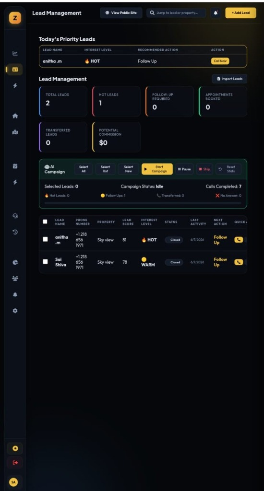
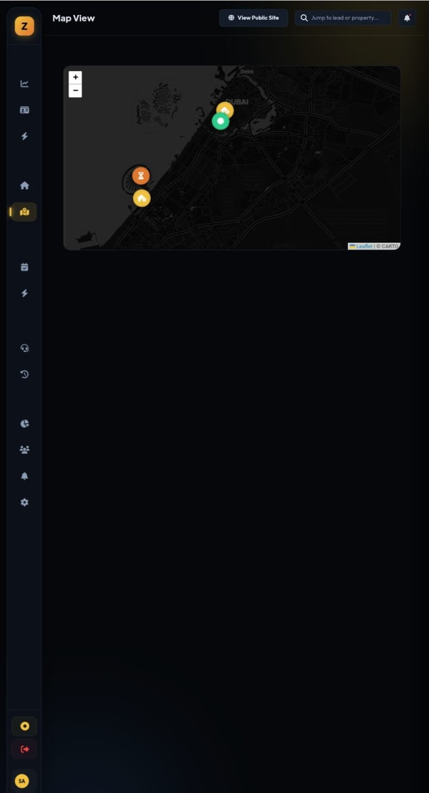
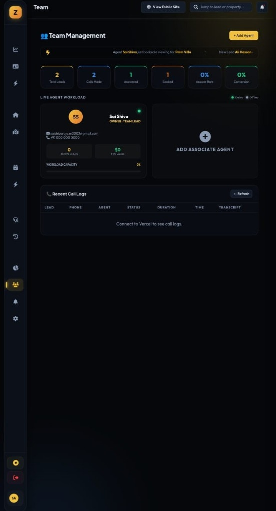
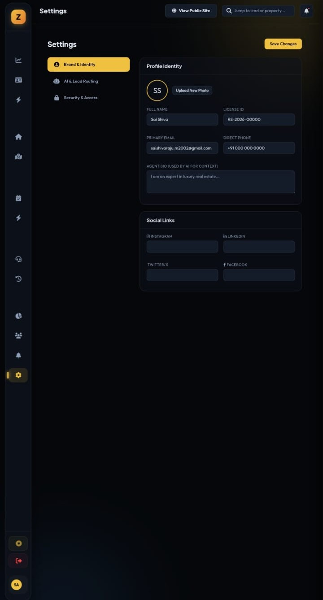

Key Metrics
Total revenue, active deals, and velocity.
Analytics Dashboard
👨💼 How it helps the Agent
Provides a bird's-eye view of pipeline health. Agents can instantly identify bottlenecks in their sales funnel (e.g., lots of calls but few appointments) and adjust their strategy to maximize commission.
🤖 AI Calling Rules
The analytics engine actively tracks the ROI of AI campaigns. It measures how many AI-initiated calls result in a "HOT" status compared to manual calls, allowing agents to fine-tune AI usage for peak efficiency.
🔄 Follow-up System
Metrics automatically flag aging deals. If a lead sits in "Contacted" for more than 48 hours without progress, the system alerts the agent to trigger an automated SMS follow-up or a secondary AI call.

AI Campaign
Select leads and start auto-dialer.
Lead Management & AI
👨💼 How it helps the Agent
Serves as the central command center. Agents no longer waste hours dialing cold leads. They simply select a batch of leads, hit "Start Campaign", and let the AI do the heavy lifting of qualifying prospects.
🤖 AI Calling Rules
- Prompt Engine: The AI uses natural language to ask pre-defined qualifying questions (Budget, Location, Timeline).
- Live Status: Updates lead status to "Answered", "Voicemail", or "Busy" in real-time.
- Scoring: AI analyzes sentiment and automatically assigns a Lead Score (e.g., 81) and labels them as HOT, WARM, or COLD based on the conversation.
🔄 Follow-up System
Smart Retry Logic: If a lead does not answer, the AI places them in a retry queue according to configured rules (e.g., call back in 4 hours). If a lead says "Call me tomorrow", the AI schedules an exact follow-up task for the human agent.

CRM Pipeline
👨💼 How it helps the Agent
A visual Kanban board that prevents deals from slipping through the cracks. Dragging and dropping cards makes updating CRM status frictionless.
🤖 AI Calling Rules
When an AI successfully qualifies a "New" lead and books an appointment, the system automatically creates a Deal Card and moves it into the "Contacted" or "Negotiation" column, saving manual data entry.
🔄 Follow-up System
Column-based automations: Dragging a card to "Negotiation" can trigger a drip email campaign with property brochures. Moving to "Closed" stops all automated follow-ups immediately.

Property Listings
👨💼 How it helps the Agent
Acts as a centralized inventory manager. Agents can quickly search properties to match with client requirements during live calls.
🤖 AI Calling Rules
Knowledge Base Integration: The AI Voice Agent has direct read-access to these property listings. If a client asks on the phone, "Does the Sky View villa have a pool?", the AI instantly queries this database and answers accurately.
🔄 Follow-up System
If a property drops in price, the system can identify leads whose budget matches the new price and prompt the agent (or the AI) to initiate a targeted follow-up campaign.

Alert Center
👨💼 How it helps the Agent
Aggregates critical events across the platform so the agent doesn't have to constantly refresh different pages. Prioritizes urgent tasks.
🤖 AI Calling Rules
Escalation Protocol: If the AI is on a call and the client is extremely angry or highly motivated to buy *right now*, the AI can flag the call and send an urgent push notification here for a human agent to take over.
🔄 Follow-up System
Consolidates all missed AI follow-ups, upcoming scheduled tours, and new website registrations into a single actionable checklist.
Map View
👨💼 How it helps the Agent
Allows agents to spatially visualize their deals. If an agent is driving to a viewing in a specific neighborhood, they can quickly see if other hot leads or properties are nearby to maximize their time.
🤖 AI Calling Rules
The AI uses geographic data from this map. When talking to a client interested in "Downtown Dubai", the AI knows which pins exist in that radius and can pitch them dynamically.

Visit Scheduling
👨💼 How it helps the Agent
A unified calendar that prevents double-booking. Keeps the agent's daily itinerary organized and synchronized across devices.
🤖 AI Calling Rules
AI Booking Agent: The AI has access to the agent's free/busy slots. During a call, the AI can say "I have an opening on Thursday at 2 PM or Friday at 10 AM, which works better?" and directly insert the appointment here.
🔄 Follow-up System
The system automatically dispatches SMS and email calendar invites to the client upon booking, and sends a 24-hour and 1-hour automated reminder to reduce no-shows.

Team Management & Logs
👨💼 How it helps the Agent / Manager
Managers can view live workload capacity to distribute leads fairly. Prevents burnout by ensuring no single agent is overwhelmed with hot leads they can't handle.
🤖 AI Calling Rules & Transcripts
Call Transcripts: Every AI call is recorded and fully transcribed. Managers can click into a call log to read the exact conversation. This is crucial for auditing the AI's performance and adjusting its personality/prompts.

Settings & Profile
👨💼 How it helps the Agent
Personalizes the CRM experience and ensures all automated emails and public sites display the correct agent branding and contact info.
🤖 AI Calling Rules
Agents can define "Do Not Call" hours here (e.g., no AI calls after 8 PM) to remain compliant with local telemarketing laws.

Public Website
👨💼 How it helps the Agent
An auto-generated, highly optimized landing page that captures inbound traffic. Eliminates the need for a separate website builder.
🤖 AI Calling Rules
Instant Lead Response: When a user fills out a form on this site, it triggers a webhook. The AI can be configured to call this new lead within 5 minutes of form submission, dramatically increasing conversion rates.
🔄 Follow-up System
Data entered here instantly creates a Lead Profile in the CRM and populates the Visit Schedule calendar if they selected a tour time.